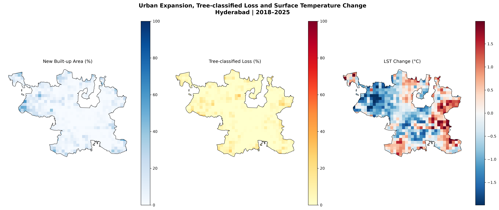

SPATIAL ANALYSIS · RESEARCH OUTPUTS
Mapping Hyderabad's environmental transformation
A comparative spatial assessment of urban expansion, tree-classified loss and land surface temperature change between 2018 and 2025.

Explore where built-up expansion and tree-classified loss are concentrated, alongside observed land surface temperature change.
Hyderabad has experienced substantial urban expansion, transforming its land-cover composition and spatial landscape. This project examines the relationship between urban growth, changes in tree-classified areas and land surface temperature between 2018 and 2025.
Using satellite-derived land-cover classifications, Landsat observations and spatial statistical techniques, the study investigates land-cover transitions, geographical clustering and variations in surface temperature across the city.
The objective is to understand the spatial patterns of urban environmental change and their implications for climate-sensitive urban planning.
A comparative spatial assessment of urban expansion, tree-classified loss and land surface temperature change between 2018 and 2025.
A comparative spatial assessment of urban expansion, tree-classified loss and land surface temperature change between 2018 and 2025.
